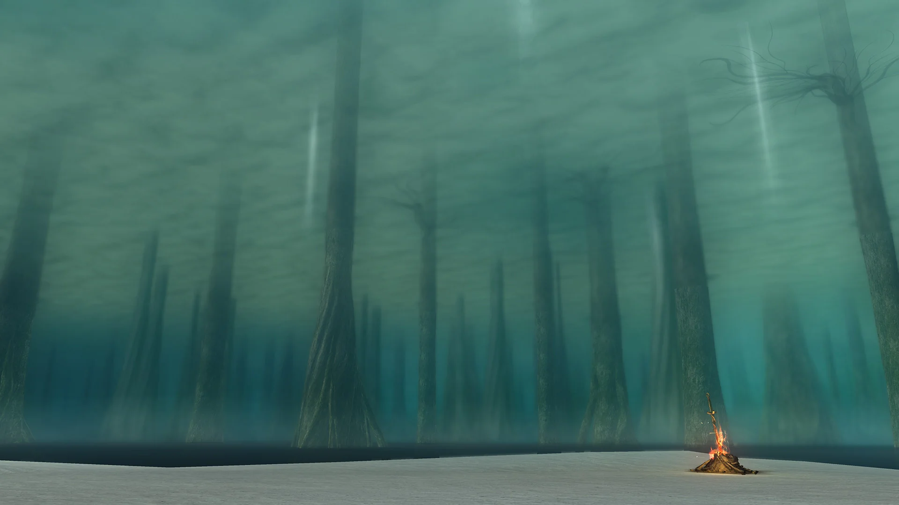

Curiosidades ocultas de Lordran que probablemente no conocías
Lordran es una tierra de secretos enterrados bajo capas de mitos y ceniza. Incluso los viajeros más veteranos pueden haber pasado por alto detalles que enriquecen su trágica historia. Aquí desenterramos algunos de los misterios que aguardan a los ojos más curiosos.
1. El Atajo del Siervo del Caos
Muchos jugadores sufren el largo y peligroso camino a través de Izalith Perdida. Sin embargo, existe una forma de evitar gran parte del sufrimiento. Si te unes al pacto "Siervo del Caos", liderado por la Hija del Caos, y le ofreces 30 Humanidades, alcanzarás el rango +2. Como recompensa, se abrirá una puerta secreta justo antes de la niebla del jefe Demonio Salvaje, creando un atajo directo a Izalith. Este camino no solo es más seguro, sino que es crucial para salvar al pobre Solaire de Astora de su sombrío destino.
2. El Verdadero Propósito del Colgante
Al crear un personaje, uno de los regalos iniciales es el Colgante, cuya descripción dice enigmáticamente: "No tiene ningún efecto, pero es un recuerdo importante". Durante años, los fans crearon cientos de teorías. La verdad, confirmada por el propio Miyazaki, es que su propósito es puramente emocional. Fue una broma y un experimento social para ver cómo los jugadores atribuían significado y valor a algo intrínsecamente inútil, un perfecto reflejo de la búsqueda de propósito en un mundo sin sentido.
3. El Reconocimiento del Gran Lobo Sif
Este es uno de los detalles más desgarradores. Si juegas el DLC "Artorias of the Abyss" antes de enfrentarte a Sif en el Jardín Tenebroso, encontrarás y rescatarás a un joven Sif en el Abismo. Más tarde, cuando entres en la arena del jefe para enfrentarte a su versión adulta, una cinemática diferente se activará. Sif te reconocerá, aullará tristemente al cielo y, con renuencia, tomará la espada de su amo caído para cumplir con su deber. La batalla se vuelve infinitamente más trágica.
4. El Sonido Distante del Herrero en Nuevo Londo
Las Ruinas de Nuevo Londo es uno de los lugares más silenciosos y opresivos, habitado solo por fantasmas. Sin embargo, si prestas atención cerca de la entrada, antes de cruzar los puentes de madera, puedes escuchar un sonido muy débil y rítmico: un martillo golpeando un yunque. Es el eco del trabajo de Rickert de Vinheim, el herrero atrapado. Este sutil detalle de audio te hace sentir que no estás completamente solo, y que incluso en la ruina más profunda, alguien sigue trabajando.